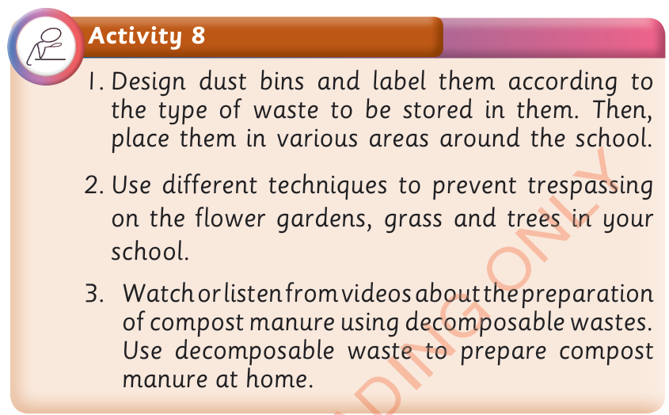

Activity 8
1.Design dust bins and label them according to the type of waste to be stored in them. Then, place them in various areas around the school.
2.Use different techniques to prevent trespassing on the flower gardens, grass and trees in your school.
3.Watch or listen from videos about the preparation of compost manure using decomposable wastes. Use decomposable waste to prepare compost manure at home.